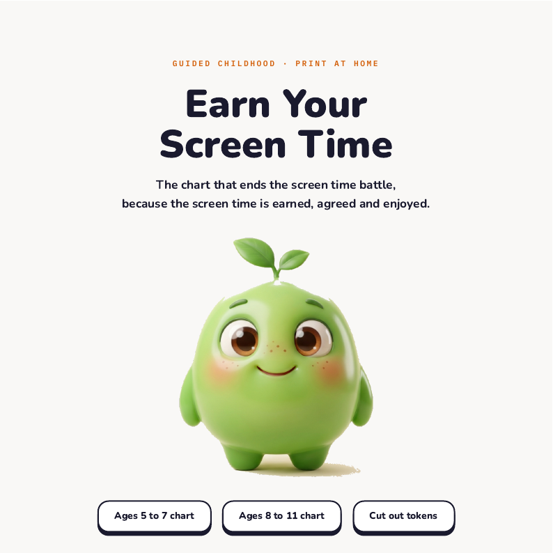
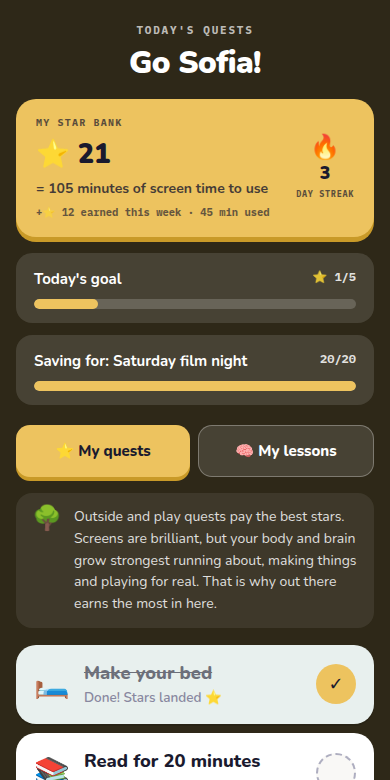

The ban, honestly
1 / 7
A ban can
delay access.
It can't build
judgement.
Guided Childhood
Orbit asks
1 / 6
If an AI answer sounds sure of itself, how would you know it's wrong?
Ask it at tea tonight. Swipe for three ways to check.
Guided Childhood
Orbit asks
1 / 6
If an AI answer sounds sure of itself, how would you know it's wrong?
Ask it at tea tonight. Swipe for three ways to check.
Guided Childhood
Print at home
Free
Screen time,
earned
on paper.

Guided Childhood
Inside Guided Childhood
3 / 7
The problem
The fight is about the clock.
The move
Jobs first, minutes after.
How we help
Stars become minutes, at
a rate you set.

A real screen, the child's page
Guided Childhood
The road to 16
1 / 8
Every age has a job.
Here is the road.
Digital Childhood Passport
Our family
The journey to 16
Guided Childhood
A thing parents say
1 / 6
“
Everyone else has Snapchat.
What would you say next?
Swipe for the words →
Guided Childhood